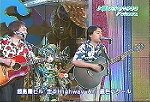
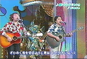
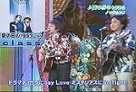
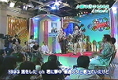
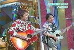
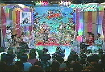
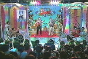
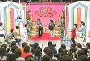
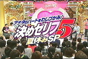

2007年
class archive ｜non-profit, silent archive
2007年度年間アルバム売り上げも上位に食い込んだ「R35 Sweet J-Ballads」ですが、大ヒット御礼記念ということでコンサートが開催されることが決定しました。
【『R35 Sweet J-Ballads』収録アーティストがライヴ集結】2007年4月25日の発売以来、20週にわたりオリコンウィークリー・ランキング・ベスト10を獲得し、
邦楽コンピレーション歴代１位となっている『R35 Sweet J-Ballads』。
また、ベスト20内のランクインとするとなんと31週連続を記録している驚くべきコンピレーション・アルバムだ。
そんな驚愕のヒット・コンピ80万枚突破を記念して、本アルバムに収録されたアーティストが集結したライヴ・イベントの開催が決定した。
もともとメガヒット級の作品ばかりが収録された当CD、その参加アーティストが集合するとなれば、通常では考えられない組み合わせになる。
今回のライヴのスゴイところは、出演アーティストが全員ミリオンセラーを放っているところだ。
予定されている出演アーティストは、槇原敬之、JAYWALK、山根康広、class、中西圭三。
このほかにも、サプライズゲストも出演予定。コンピレーション・アルバムをベースにしたライヴ・イベントで、ミリオンセラー・アーティストだけが集結するのは、もちろん歴史上初めての出来事。
そもそも『R35 Sweet J-Ballads』の企画は、男性ヴォーカルに的を絞った選曲で、男性から女性へのメッセージがメインテーマだった。
そのコンセプトを「もう一度、妻を口説こう。」というキャッチコピーで表現していた。
今回はそのコンセプトをライヴで表現することを重んじ、『ライヴR35』は「もう一度、妻と歌おう。」がテーマ。
ということで、オーディエンスが全員、想い出の曲を一緒に歌えるような演出が施こされる予定とのこと。
いったいどのような施策なのか想像が付かないが、巨大なホールで、歌声喫茶が繰り広げられるのか？
妙な一体感と不思議な高揚で、癖になる体験になりそうだ。
ちなみに、会場に託児所（有料／要予約）を完備するなど、来場者が安心して楽しめるような配慮も行なうという。
もともと、お客さんからの強い要望が関係者とアーティストに伝わり実現への運びとなったこのイベント、これまでになかった。おもしろいイベントになりそうだ。 【ライブ R35 ～もう一度、妻と歌おう。～】
日時：2008年2月29日(金曜日）
開場18:00 / 開演19:00
会場：東京国際フォーラムホールA
出演者：JAYWALK/中西圭三/槇原敬之/山根康弘/class スペシャルゲストも出演予定！
▼チケット発売情報▼
全席指定:￥7,800（税込） 託児所完備（有料/要予約）
※現在、e+［イープラス］で最速先行予約受付中！
・07/12/7(金)12:00～07/12/12(水)18:00 プレオーダー受付（終了)
・07/12/20(木)12:00～07/12/21(金)15:00 ２次プレオーダー受付(終了)
・08/1/5(土)10:00～08/2/25(月)18:00 一般発売
コンサート開催に伴い、classが告知の為になんと！なーんと！フジテレビ系朝の情報番組「とくダネ！」にも出演します！
色々とまだ未定のことが多いので、詳細が判明次第、追加更新していきます(･∀･)ﾉ
夏の日の1993が収録された「R35 Sweet J-Ballads」が大ヒットとなり各種メディアでも取り上げられているこの頃…。
再び「夏の日の1993」が収録されたオムニバムアルバム「GIFT」がベルウッドレコードから10月24日にリリースされます。
…が！今回のオムニバスに収録される「夏の日の1993」は一味違う！！
「Sea Sideバージョン」と銘打って収録されています。これは今までになかったアレンジ！
ボーカルは現在のclassなのかどうかは不明です。買って自分の耳で確認せよ！
1 夏の日の1993（Sea Side ver.）／class
2 タッチ（21st century ver.）／岩崎良美
3 ヒーロー～Holding out for a hero～（Dance ver.）／麻倉未稀
4 蜃気楼（R＆Ｂ ver.）／クリスタルキング
5 メモリーグラス（Reggae ver.）／堀江 淳
6 完全無欠のロックンローラー（エイサーMIX ver.）／アラジン
7 狙いうち（Exotic ver.）／山本リンダ
8 セクシーナイト（Digital Rock ver.）／三原じゅん子
9 学園天国（Neo Rockabilly ver.）／フィンガー５
10 CHA-CHA-CHA（Lovely ver.）／石井明美
11 gift（Orchestra ver.）／沢田知可子with森川美穂
<追記>
classのお2人が再レコーディングしたものでした。サンバ調の新たな夏の日の1993を是非聴いてみて下さい！
2007年8月27日にテレビ朝日系列O.A中「快感MAP」のコーナー「タカアンドトシが大好きだったあの人に会いたいMAPⅡ」にclassのお2人が出演されました。
出演まとめを載せたいのですが、管理人は関西在住の為、番組がみれません(´･ω･`)
番組HPに出演模様が掲載されていますので、見れない方はそちらをご覧下さい→「快感MAP」
コーナーがクイズ形式の為、出演情報は当日にしかアップしませんでした。すいません。
テーマは「懐かしの夏の恋ウタ」。4択形式の答えがclass「夏の日の1993｣というわけでした。
        
さらにエンディングでは日浦さんがど真ん中で「明日も見てくれるかな？」「いいとも～～｣コールをやっちゃうという快挙まで成し遂げました。
今年の夏もclassが動きます！…っていっても本人達が直接始動するわけじゃないんだけど( ´･ω･`)
「究極のベスト」リリースされた去年に引き続き、今年はウェブクウ（東芝EMI系列？）レーベルより"HOT DISK"と"COOL DISK"の2枚がセットになった「BEST of BEST」が6月27日に発売されますっ！3,000円！買いっ( ･∀･)b
リリースに伴い、お2人のロングインタビュー特設ページが開設されています。永久保存版だー！印刷して保存する！
http://www.uraon.com/class/
下の歴代シングルPV紹介ですが、｢夏の日の1993｣サムネイルが｢もう君を離さない｣になっています。なぜ？

1993年にデビュー。日浦孝則と津久井克行の男性ツイン・ヴォーカル・デュオ。
テレビ朝日系「君といつまでも」のオープニング・テーマに起用された、
デビューシングル「夏の日の1993」がいきなりミリオンヒットを達成！
もはや夏の定番SONGとなっている。
2006年7月「トリビアの泉」に出演以来、再ブレイク！
DISC 1 [HOT DISC]
01.夏の日の1993
02.もう君を離さない
03.Rainy Day
04.百万本の雨
05.君だけが知ってる
06.HALF MOON
07.夏にかかるWedding Song
08.永遠の素顔
09.Melody
10.Holiday
DISC 2 [COOL DISC]
01.プロローグ
02.セピア色の微笑
03.September True Love
04.サヨナラがにじむ街
05.遠い夏
06.White Winter
07.聖夜
08.Day By Day
09.サヨナラ
10.Slowly but Surely
classのエッセンスがすべて凝縮されたベストアルバムをリリース！
ミリオン・ヒット『夏の日の1993』で一世を風靡したツイン・ヴォーカル・デュオ「class」。
同曲は、毎年「夏の歌ベスト・テン」にランキングされ、今や夏の定番ソングとなっています。
誰もが口ずさめ、何年たっても色褪せない名曲として、リリースから10年以上の時がたった現在も着メロ、着うた、楽曲配信が絶好調という稀有な存在です。
そんな中「たくさん曲が入ったclassのベスト盤ってないの？」という声に応えて
classのベスト盤、『BEST of BEST』が本日発売されます。7枚のシングル曲をはじめ、
『HOT DISC』『COOL DISC』の2枚組からなる全20曲を収録しており、
classの意外な側面もふんだんに収録した“目からウロコ”のベスト盤になっています。
また、現在class特設ホームページで、PV視聴とインタビューが視聴できます。
先日からテレビCMで「夏の日の1993」が流れてきます。
「もう一度、妻を口説こう」をキャッチフレーズにもちい90年代前半のヒット曲を網羅したオムニバスCDがワーナーミュージックジャパンより4月25日に発売されました。タイトルは「R35-Sweet J-Ballades-」。特別ページ開設中です。
昔のカセット探せば全曲ありそうな曲ばっかだわ…(･ω･; )
02. 君がいるだけで／米米ＣＬＵＢ
03. 何も言えなくて…夏／ＪＡＹＷＡＬＫ
04. Get Along Together ～愛を贈りたいから～／山根康広
05. TRUE LOVE／藤井フミヤ
06. シングルベッド／シャ乱Ｑ
07. 離したくはない／Ｔ－ＢＯＬＡＮ
08. クリスマスキャロルの頃には／稲垣潤一
09. Woman／中西圭三
10. 夏の日の1993／ｃｌａｓｓ
11. もう恋なんてしない／槇原敬之
12. サボテンの花 ～“ひとつ屋根の下”より～／財津和夫
13. 接吻 kiss／オリジナル・ラヴ
14. 壊れかけのRadio／徳永英明
15. 愛が生まれた日／藤谷美和子・大内義昭
16. 世界中の誰よりきっと／中山美穂＆ＷＡＮＤＳ
あなたは今も「I LOVE YOU」と、言ってますか?
90年代前半…トレンディ・ドラマやCMタイアップにより数々の名曲が生まれた素晴らしい時代。
そしてその時代はトリプルミリオン、ダブルミリオン、ミリオンセラーのシングルが数多くリリースされた。
そんな時代背景の中で生まれた90年代前半のドラマのクライマックスを飾った美しいバラード、CMにより数多くの人に愛されたラヴソングにフォーカスした究極のラヴ・バラード集!
収録曲のトータル売上げ枚数はなんと!2,000万枚を超える超豪華な楽曲ばかり!
メガヒット・バラードの決定盤といえるコンピ!!! スウィートな2人のスイートテンCD。